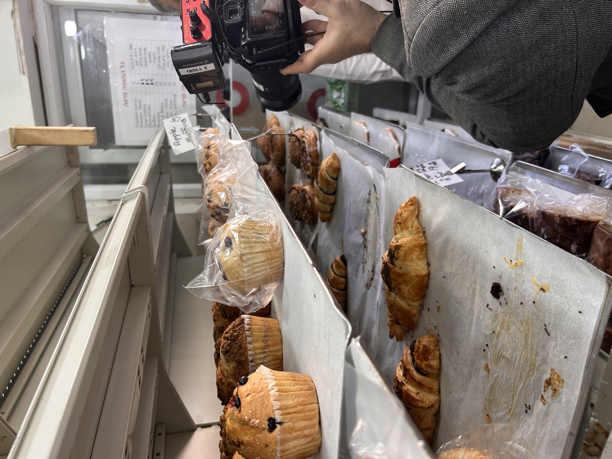
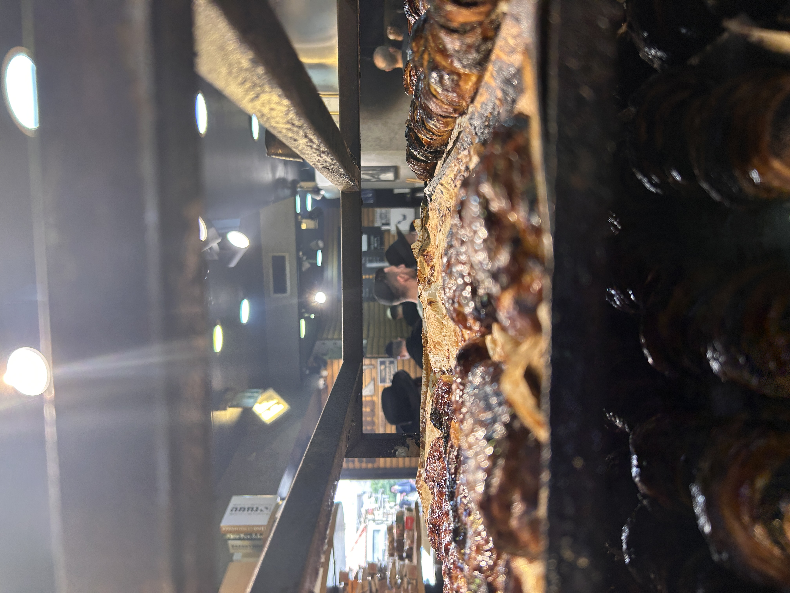

לילך רובין הגדירה את עצמה כיזמת חברתית וקולינרית. מה זה אומר? שהיא מניעה תהליכים חברתיים בעזרת אוכל. עמדנו בכניסה לשכונת בית ישראל בירושלים, שכונה קטנה שהרבה אנשים לא מכירים, ממש מאחורי מאה שערים. אוטובוס בדיוק הגיע והוריד המון אברכים שמיהרו ללכת לישיבת מיר. לילך הסבירה שלאברך אסור ללכת עם תיק, כי אם הוא הולך עם תיק, זה אומר שהוא מתעסק בהבלי העולם הזה. ולכן הם הולכים עם שקיות.
השכונה מתפרנסת בזכות ישיבת מיר, המוסד הענק שמושך אברכים אמריקאים עם כסף לבזבז. הם לא רוצים לחכות לחמין של הישיבה, אז הם יוצאים החוצה ומחפשים. והסופרים פה מזהים הזדמנות עסקית, פותחים עסקים, וככה נוצרת הפנינה הקולינרית של בית ישראל.
נכנסנו למאפיית נחמה, מאפייה יזדית שקיימת מ-1910. בלב המאפייה עומד תנור קיר עצום, תנור אבן של יותר ממאה שנה. אפי, הבעלים, בהתחלה לא כל כך רצה לדבר, אבל הלחמניות הוציאו את זה ממנו. על אחד המדפים שכבו הלחמניות המיוחדות — שטוחות לחלוטין, ארוכות ויבשות כמו דיקטים. זה הנוניחוש, לחם יבש בפרסית, לחם שיהודי בוכרה היו לוקחים אתם למסעות.

מאפיית נחמה
משפחה יזדית · מ-1910 · תנור אבן מקורי
שברתי חתיכה וטעמתי. מרגישים את השרוף, מרגישים את התנור. זה הקרקר הכי טעים שאכלתי. לילך הסבירה שהסוחרים היו שוברים את זה, שמים בשקית נייר ויוצאים לדרך למכור מרקולת. לחם של מאות שנים, ואולי יותר. שנייה לפני שהלכנו, שאלתי את אפי כמה עולה סופגנייה. הכי זול — חמישה שקלים. הכי משוכללת — אחת עשרה.
"יש לנו איזה רב ידוע מאוד בציבור שאנחנו עושים לו כל יום שישי חלה של שני מטר. התנור שלנו הוא חמש מטר על ארבע."
— אפי, מאפיית נחמה format_quote
חצינו את הכביש לעבר הפתיליה, מסעדת פועלים קטנטנה עם 18 מקומות ישיבה. כדי להגיע למטבח צריך לעלות במדרגות לולייניות לקומה השנייה. שם פגשנו את שוקי, לבד במטבח בין עשרה סירים לפחות.
שוקי מגיע כל בוקר בארבע לפנות בוקר ומתחיל לעבוד. הכל לבד. אורז, צלי כתף, קציצות בקר ברוטב אדום, מרק ירקות, גולש בקר, סופריטו עוף, אפונה, שעועית ירוקה, ועוד חמישה מרקים שונים. שאלתי אותו למה לבד. הוא ענה בפשטות שאי אפשר שמישהו יסתובב לו בין הרגליים — הוא צריך לחוש את הכל, להרגיש את הכל.
ירדנו למטה לאכול ואחיו של שוקי, שלומי, הגיש דברים טעימים. התחלתי ממג'דרה, עברתי לקובה בסלק עם ציפוי דק שנותן מקום לבשר, והבשר השתלב מעולה עם החמצמצות של המרק. השעה היתה עשר בבוקר וזה לא היה סביר בכלל. לילך נתנה לי פיתה יזדית לטבול, ופתאום הכל קפץ — התימני, הערבי והיהודי, בצלחת אחת.
"אני לא יכול שמישהו מסתובב לי בין הרגליים. אני צריך לחוש את הכל, להרגיש את הכל. יש לי את הזמנים שלי."
— שוקי, הפתיליה format_quote

הפתיליה
שוקי ושלומי · 56 שנה · 18 מקומות ישיבה
שלומי סיפר שהשכונה השתנתה מאוד. פעם היה פה אזור תעשייתי — פורמייקות, חנויות צבע, זכוכיות. לאט לאט הכל השתנה, השכונה הפכה חרדית יותר, הישיבות גדלו, וכל העסקים התאימו את עצמם. הם עבדו 40 שנה בלי תעודת כשרות. רק כשפירקו את המסעדה ובנו מחדש, נכנסו כל מיני פלגים ירושלמיים ודרשו.
"תקשיבי, חייתי שנתיים בארצות הברית. בכיתי מהאוכל, בכי. זה עושר בצלחת."
— לילך רוביןשאלתי את שוקי ושלומי אם הם לא עייפים. השאלה הצחיקה אותם. אבא שלהם בן 86, ועדיין מגיע כל בוקר לבשל ולעזור. שלומי אמר שהם לא באים לכאן בשביל ביזנס, אלא כי הם אוהבים לבשל. אם מחר זה ייגמר, זה ייגמר.
"אנחנו לא באים לכאן בשביל ביזנס. אנחנו באים לכאן כי אנחנו אוהבים לעשות את זה. אם מחר זה ייגמר, זה ייגמר."
— שלומי, הפתיליההפתיליה של משפחת לוי ראתה הרבה ב-56 שנותיה. מההפנתרים השחורים שהיו מגיעים מממוסרה, דרך יצחק דורי שהיה יושב לאכול כל יום, ועד לבחורי הישיבות שלא רצו שיראו אותם אוכלים ללא תעודת כשרות. כשהוסיפו כשרות, שמו פלסטיקים על החלונות שלא יראו את הסועדים בחוץ. ככה עובדים בירושלים.
שלומי סיכם: אנחנו לא באים בשביל ביזנס. אם מחר זה ייגמר — זה ייגמר. עד אז, בבוקר מגיעים, ומבשלים.
קפה אמריקאי
מאפים וקינוחים · לאברכים אמריקאים · מאז הקורונה
התחנה השלישית היתה coffee break של האברכים האמריקאים. נכנסנו למאפייה חדשה יחסית, שנפתחה מאז הקורונה. שמחה, הבעלים, הציג לנו את המיטב: עוגיות שחור-לבן כמו בסיינפלד, בבקות, ודונאטס אמריקאי.
תוך כדי שדיברנו, נכנסו שני בחורי ישיבה אמריקאים. אחד מהם סיפר שהוא מניו יורק, בישיבה כבר עשר שנים. שאלתי אותו למה הוא בא לפה. להפסקת קפה, ענה, כאילו זו השאלה הכי ברורה בעולם. טעמתי את העוגייה האמריקאית — טעם של אמריקה. ככה, לא הסופגנייה הישראלית בכלל.
"זה המקום הכי יפה בעולם. אין מקום יותר יפה."
— אברך אמריקאי, ישיבת מיר format_quote
יצאנו מבית ישראל, ואני הרגשתי שעברתי מסע תרבותי וקולינרי כאחד. המון תרבויות בתא שטח קטנטן. לא הפריעו לנו, לא אמרו לנו להפסיק לצלם, היו סופר נחמדים. לילך אמרה שהספקנו רק שלוש נקודות, אבל אפשר לשוטט פה ארבע שעות. ההמלצה שלה: תחליפו את הסיבוב הירושלמי מבית הכרם בסיבוב בבית ישראל.